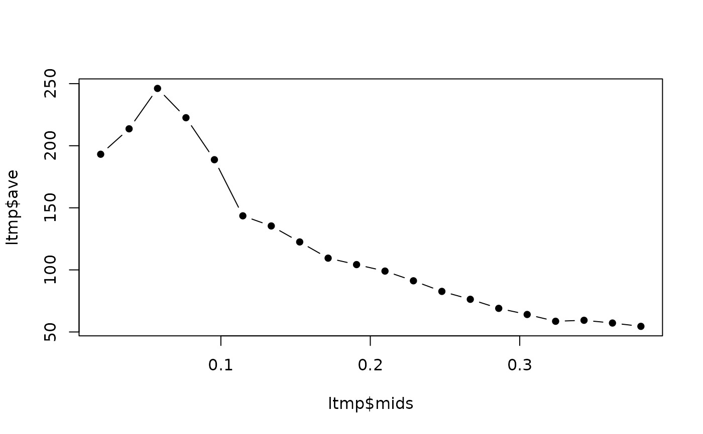

Mean and standard deviation in resolution shells.
avei_vs_res.RdCalculates averages and standard deviations of the input vector quantity for all reflections, corresponding to shells of resolution.
Arguments
- nbin
A positive integer. The number of resolution shells.
- resos
A vector of real quantities. These are the resolutions (in angstroms) corresponding to the data vector, II. If the data vector is missing, the averages will be computed just for resos.
- II
A vector of real quantities. This is the key quantity whose averages and standard deviations are calculated. If
IIis set toNULL, resolutions averages and standard deviations will be the calculated quantities.- m
Minimum (highest) resolution (in angstroms). Data with resolution smaller than m will be ignored when calculating the averages.
- M
Maximum (lowest) resolution (in angstroms). Data with resolution larger than M will be ignored when calculating the averages.
Value
A named list of length 4. counts is a vector of integers, the number of
reflections in each resolution shell. mids is the representative inverse resolution
for each resolution shell; the value is decided by the function hist. ave
is the average value in each resolution shell and sd is the corresponding standard
deviation.
Details
Binning is done with inverse resolutions in order to have lower resolutions
correspond to small numbers and high resolutions to large numbers. The output
mids, ave and sd correspond to inverse resolutions.
Examples
datadir <- system.file("extdata",package="cry")
filename <- file.path(datadir,"1dei_phases.mtz")
lmtz <- readMTZ(filename)
hkl <- lmtz$reflections[,1:3]
II <- lmtz$reflections[,4]
cpars <- lmtz$header$CELL
resos <- hkl_to_reso(hkl[,1],hkl[,2],hkl[,3],
cpars[1],cpars[2],cpars[3],
cpars[4],cpars[5],cpars[6])
ltmp <- avei_vs_res(20,resos,II)
plot(ltmp$mids,ltmp$ave,type="b",pch=16)
